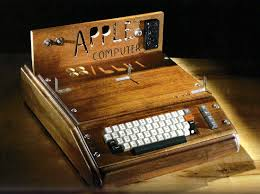

Apple I (1976)
Founders: Steve Jobs, Steve Wozniak, and Ronald Wayne
Price: $666.66
Features:
- CPU: MOS 6502 @ 1 MHz
- Memory: 4 or 8 KB
- Storage: 256 B ROM.
- Graphics: 40×24 characters, hardware-implemented scrolling.
Significance: It was Apple's first product and one of the first personal computers. Only around 200 units were made.